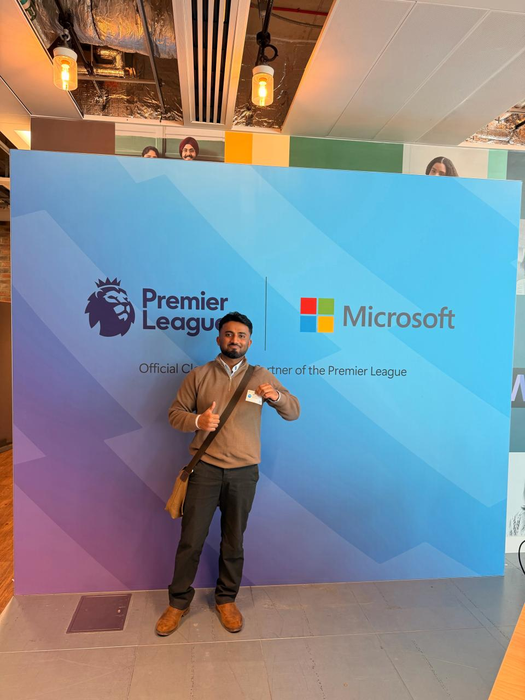

Blog 2 posts
Notes & write-ups
Longer write-ups on things I've done and seen in data and security.

Echoes of innovation at Bletchley Park
Visiting the birthplace of modern computing and the origins of information security.

From soft skills to cybersecurity: completing Microsoft Embrace
Going from online workshops to meeting my mentor in person at Microsoft.